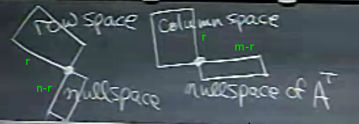
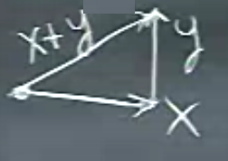

Ders 14
Dersimizin konusu dikgenlik (orthogonality). İki vektörün birbirine dikgen olması ne demektir, iki altuzayın (subspace), hatta iki bazın (basis) birbirine dikgen olması ne demektir? Bu tür soruların cevabını arayacağız.
[Alttaki resim Strang hocanın kitaplarında çokça gösterilir] Bu resmi hatırlıyoruz, burada bildiğimiz bazı şeyler var, mesela boyutlar [yeşil olarak yazılı].

Resimde satır uzayı (rowspace) ile sıfır uzayının (nullspace) birbirine dikgen olduğunu, yani aralarında 90 derece olduğunu söylüyoruz. Aynı şekilde kolon uzayı (columnspace) ile $A^T$'nin sıfır uzayının birbirine dikgen olduğunu.. Şimdiye kadar altuzaylar hakkında pek çok şey öğrendik, onların boyutlarını, bazlarının ne olduğunu hesaplamayı mesela. Şimdi bu dağarcığa yeni bir bilgi daha eklemiş olacağız.
Dikgen Vektörler
Dikgenlik, ya da diklik, nedir? $n$ boyutlu bir uzayda iki vektörün arasında 90 derece var ise onlara dikgen deriz. Elimizde $x$ vektörü var, ona dik olan $y$ var mesela; $x+y$'i düşünelim, bir dik üçgen oluştuğunu görebiliriz, ki $x+y$ bu üçgenin hipotenüsü.

Buradan hareketle bana verilen herhangi iki vektörün birbirine dik olup olmadığını nasıl anlarım? Noktasal çarpım alarak, ki benim tercihim bunu $x^Ty$ olarak yazmak, eğer bu çarpım sonucu 0 ise $x,y$ diktir. Ne kadar güzel; gayet basit bir çarpım ile iki vektörün dikliğini bulabilmek. Peki bu metot niye işledi?
Üstteki dik üçgen örneğinde Pitagor derdi ki "eğer $x$ uzunluğunun karesi artı $y$ uzunluğunun karesi, $x+y$ uzunluğunun karesine eşit ise $x,y$ diktir".
$$ ||x||^2 + ||y||^2 = ||x+y||^2 \qquad (1) $$
Tabii üstteki eşitlik dik olmayan üçgenler için doğru değildir.
Diklik durumunda, o zaman, üstteki formülün bir şekilde $x^Ty$ ile ilişkisi olmalı. Bu ilintiyi kurabilir miyiz?
Uzunluğun karesi, $||x||^2$ nedir? Rasgele bir vektör alalım, $x = \left[\begin{array}{ccc} 1 & 2 & 3 \end{array}\right]^T$ mesela, bu vektörün uzunluğunu nasıl buluruz? $x^Tx$ ile. Ve bu formülü gördüğüm anda bir pozitif sayıya baktığımı bilirim, çünkü $x^Tx$ tüm $x$ hücrelerinin karesini almak demektir, ve kare her sayıyı pozitif yapar, sonra bu kareler toplanacaktır zaten. Ve uzunluk kavramsal olarak pozitif bir sayıdır doğal olarak, yani doğru yoldayız. Örnek için $x^Tx=||x||^2=14$.
Şimdi $x$'e dik bir $y$ uyduracağım,
$$ x = \left[\begin{array}{r} 1 \\ 2 \\ 3 \end{array}\right], y = \left[\begin{array}{r} 2 \\ -1 \\ 0 \end{array}\right], x+y = \left[\begin{array}{r} 3 \\ 1 \\ 3 \end{array}\right] $$
Buradan hareketle uzunluk hesapları $||y|| = 5$, $||x+y||=19$. Görüldüğü gibi $14+5=19$ yani hesap doğru. O zaman uzunluk hesabını noktasal çarpım olarak şöyle yazmaya uğraşabilirim,
$$ x^Tx + y^Ty = (x+y)^T(x+y) $$
Dikkat, tekrar hatırlatalım, üstteki formül her zaman doğru değil, sadece $x,y$ birbirine dik olduğu zaman doğru. Eşitliğin sağ tarafını açalım,
$$ x^Tx + y^Ty = x^Tx + y^Ty + x^Ty + y^Tx $$
Hemen bir iptal
$$ \cancel{x^Tx} + y^Ty = \cancel{x^Tx} + y^Ty + x^Ty + y^Tx $$
Bir tane daha
$$ \cancel{y^Ty} = \cancel{y^Ty} + x^Ty + y^Tx $$
$$ 0 = x^Ty + y^Tx $$
$x,y$ birer vektör olduğu için $x^Ty$ ve $y^Tx$ ifadeleri aynı şeydir,
$$ 2x^Ty = 0 $$
ya da
$$ x^Ty = 0 $$
Yani Pitagor denklemi bazlı (1) bizi üstteki formüle getirdi. Dikgen vektörlerin noktasal çarpımı sıfıra eşittir. Hakikaten temiz bir formül, çok güzel. Tekrar üzerinden geçelim, (1) dik açı durumunda doğru, o zaman üstteki formül de dik açı durumunda doğru. Diğer yönden bakarsak, bu formül bir bakıma dikgenliğin testi, yani o sonucu gördüğümüz zaman dikgenlik olduğu sonucuna varmalıyız.
İlginç bir soru, eğer $x$ sıfır vektörü ise, $x,y$ dikgen olabilir mi? Evet. Cebirsel olarak bu zaten doğru olur, ve matematikte kuralları takip etmek gerekir, o zaman bu durumda da $x,y$ dikgendir. Sıfır vektörü tüm diğer vektörlere diktir.
Altuzaylar ve Diklik
Bir altuzayın bir diğeriyle dikgen olması ne demektir? Vektörlerden altuzaylara doğal bir geçiş nasıl yapabilirim? Bir altuzay düşünelim şimdi, mesela şu duvar [hoca arkasındaki tahtanın olduğu duvarı gösteriyor], bu duvarın sonsuzluğa uzadığının düşünelim, yani 3 boyutlu uzayda bir düzlem bu, 2 boyutlu bir altuzay. Bu odanının tabanı bir başka altuzay olsun, yine sonsuzluğa üzüyor tabii, ve orijin noktası da diyelim ki [ikisinin kesiştiği bir noktaya işaret ediyor] şurada. Dünyanın orijini burası. Bu iki altuzay dikgen midir? Dikgen olmaları ne demektir?
Acaba şöyle bir tanım yapabilir miyiz?
Altuzay $S$ altuzay $T$ ile dikgendir, eğer, $S$ içindeki her vektör $T$ içindeki her diğer vektör ile dikgen ise.
Tanım örneğimiz için doğru mu? Acaba orijinden çıkan ve birbirine dik olmayan $S,T$ içinde iki vektör bulabilir miyiz? Tabii ki. Hatta en bariz dik olmayan vektör iki altuzayın (duvar ve tabanın) kesiştiği yerdeki vektör, bu durumda bu vektör kendisiyle dikgen olamaz.
Ya da bir düzlem ve onun altuzaylarını düşünelim, ne zaman bu düzlemin altuzayları birbirine diktir? Tabii ondan önce düzlemdeki altuzaylar nelerdir? Mesela sıfır vektörü, orijinden geçen çizgiler, ya da düzlemin tamamı. Orijinden geçen bir çizgi düzlemin tamamına ne zaman diktir? Hiçbir zaman. Çünkü onun üzerindedir. Aynı çizgi sıfır altuzayına ne zaman dik? Her zaman. Peki orijinden geçen bir çizgi orijinden geçen bir diğer çizgiyle ne zaman dik? Her zaman değil, ama bu şartı üstte gördük, eğer aralarında 90 derece açı varsa birbirlerine dikler.
Yani duvar örneğinde kabaca düşünüldüğünde diklik farzedilmişti, fakat bu doğru değil. İki düzlemin kesişmesi, aynen iki çizginin kesişmesinde olduğu gibi, diklik için yeterli değil.
Şimdi şunu iddia ediyorum ki, gösterdiğim duvarlar dik değil ama, bir matrisin satır uzayı ile sıfır uzayı birbirine dikgen. Nasıl?
Sıfır uzayı hakkında bildiğimiz şudur,
$$ Ax = 0 $$
yani bu denklemi tatmin eden $x$'ler bir sıfır uzayı oluştururlar. Matris formunda ve satırları göstererek düşünürsek,
$$ \left[\begin{array}{ccc} \leftarrow & \textrm{satır } 1 & \rightarrow \\ \vdots & & \vdots \\ \leftarrow & \textrm{satır } m & \rightarrow \end{array}\right] \left[\begin{array}{r} \uparrow \\ x \\ \downarrow \end{array}\right] = \left[\begin{array}{r} 0 \\ \vdots \\ 0 \end{array}\right] $$
Bu matris çarpımını gerçekleştirmek için her satırı $x$ ile çarpmak gerekir, yani çarpımın bir diğer anlamı "her satırın $x$ ile noktasal çarpımının sıfıra eşit olması"dır. Devam edersek, o zaman $x$, $A$'nin 1. satırına dikgendir, 2. satırına da dikgendir, tüm satırlarına dikgendir, çünkü tüm çarpımların sonucu sıfırdır. O zaman $x$'in $A$'ya dikgen olduğunu söyleyebilirim. Ve $x$'ler zaten sıfır uzayından geldiğine göre tüm sıfır uzayı üstteki satırlara diktir.
Ama bu yeterli mi? $A$'nin satırlarına dikliği bulduk, ama bu $A$'nin satır uzayına dik olmakla aynı şey midir?
Olduğunu ispat etmek için satır uzayının tanımını hatırlayalım, $A$'nin satırlarının her türlü kombinasyonu satır uzayını oluşturur. O zaman
$$ \big( c_1 \textrm{ 1. satır } \big)^T x = 0 $$ $$ \big( c_2 \textrm{ 1. satır } \big)^T x = 0 $$ $$ \vdots $$
Bu ifadeler doğru, çünkü her satır için iki tarafı da $c_i$ ile çarpıyoruz, sıfırla çarpılan $c_i$ yine sıfır olur, eşitliğin sağ tarafı değişmez. Bu şekilde tüm satırlar için devam eder. Şimdi üstteki denklemleri birbirleri ile toplarsam,
$$ \big( c_1 \textrm{ 1. satır } + c_2 \textrm{ 2. satır } + ... \big)^T x = 0 $$
elde ederim. Bu ifade de aradığım sonucu aynen söylüyor, $A$ satırlarının her türlü kombinasyonunun $x$ ile çarpımı da sıfıra eşit diyor.
Güzel, böylece dersin başındaki resmi doğrulamış olduk. Gerçi sadece satır uzayına baktık ama kolon uzayı ve $N(A^T)$'nin dikgen olması arasındaki argümanlar aynı. $A$ yerine $A^T$ kullanmak yeterli.
Baştaki resme geri dönersek, şimdi daha mutluyum çünkü artık o altuzayların nasıl konumlandığını daha iyi anlayabilmeye başladım. Kolon uzayı ve $N(A^T)$, $\mathbb{R}^m$ altuzayının içinde konumlandılar, satır uzayı ve $N(A)$ işe $\mathbb{R}^n$ içinde kendilerini konumlandırdılar.
Burada önemli bir nokta: 3 boyutu düşünelim şimdi, bana 3 boyut içinde birbirine dikgen birkaç tane altuzay söyleyin (satır uzayı, sıfır uzayı bağlamında), ki bu altuzaylar 3 boyut içinde ama onu tamamen doldurmuyorlar, geriye bir / birkaç boyut kalıyor. 3 boyut içinde iki tane birbirine dik çizgi olsun, yani mesela bir çizgi satır uzayı diğer çizgi sıfır uzayı. Bu mümkün mü? Hayır, çünkü boyutlar doğru değil. Mesela $\mathbb{R}^m$ içinde satır uzayı $r$ boyutunda, sıfır uzayı $n-r$ boyutunda, ve bu ikisini toplayınca $n$ elde ediyoruz. Bahsedilen iki çizginin boyutunu toplayınca 2 elde ediyorum, 3 değil. Örnekte görelim,
$$ A = \left[\begin{array}{rrr} 1 & 2 & 5 \\ 2 & 4 & 10 \end{array}\right] $$
Bu altuzayın boyutu 1. Sıfır uzayının boyutu ne? $n=3$, kerte $r=1$ (çünkü 2. satır 1.'nin tekrarı).
$$ \underbrace{ \left[\begin{array}{rrr} 1 & 2 & 5 \\ 2 & 4 & 10 \end{array}\right] }_{n=3} \underbrace{ \left[\begin{array}{r} x_1 \\ x_2 \\ x_3 \end{array}\right] }_{r=1} = \left[\begin{array}{r} 0 \\ 0 \end{array}\right] $$
O zaman $dim(N(A))=2$, yani bir düzlem. Artık dikliği de bildiğimize göre bu düzlemin $\left[\begin{array}{ccc} 1 & 2 & 5 \end{array}\right]^T$ vektörüne dik olan düzlem olduğunu görmek zor olmaz.
$A$ içinde 2. satır etkisiz, aslında onu silebiliriz bile,
$$ \left[\begin{array}{rrr} 1 & 2 & 5 \end{array}\right] \left[\begin{array}{r} x_1 \\ x_2 \\ x_3 \end{array}\right] = \left[\begin{array}{r} 0 \end{array}\right] $$
Vurgulamak istediğim şu: sıfır uzayı ve satır uzayı dikgen, ayrıca, bu altuzayların boyutlarının toplamı $A$'nin boyutuna eşit. Bu bakımdan yeni bir kelime kullanacağım, dikgen tamamlayıcı (orthogonal complement), şu şekilde, sıfır uzayı ve satır uzayı $\mathbb{R}^n$ içinde birbirinin dikgen tamamlayıcısıdır.
Üstteki ifadeyi belki Lineer Cebir'in 2. ana kısmı / bölümü olarak adlandırabilirim. 1. büyük bölüm temel altuzayların boyutları ile alakalı idi, 2. ise onların dikgenliği ile alakalı. 3. bölüm dikgen bazlar ile alakalı olacak, önümüzdeki derslerde göreceğiz.
Önümüzdeki konulardan biri, $Ax=b$ denklem sistemini hiç çözüm olmadığı durumları için çözülmesi durumu... Hoppala diyeceksiniz, çözüm olmadan sistem nasıl çözülüyor? Fakat bu sürekli yapılan bir işlem, hatta, çok ihtiyacı duyulan bir işlem. Mesela elimde $m$ denklem var, ama $n$ bilinmeyen var, ve $m > n$, o zaman kerte $m$ olamaz, ne olacak?
Bir örnekle daha iyi anlaşılabilir; gökyüzünde bir uydu var, ve onun konumunu ölçmek istiyorsunuz, ve ölçüm topluyorsunuz, diyelim ki 1000 kere. Yani elde gerçek konum için lazım olan belki 6 parametre var ise, onlar için 1000 tane denklem var. Ya da, birinin nabzını ölçüyorsunuz, ne kadar sıklıkla kalp attığına bakıp, bunu bir ölçüm olarak bir yere yazıyorsunuz, ve bunu pek çok kez yapıyorsunuz. Bu gibi durumlarda elimde kesin bir $b$ yok, çünkü $b$ içindeki hatayı tam bilmiyorum, ama kabaca $A,b$ değerleri var ve bu bilgiler yine de enformasyon açısından oldukça zengin.
Bu tipik bir Lineer Cebir problemi. Kesin çözüm olmasa bile "mümkün en iyi çözümü" bulmak.
Tabii "kesin" çözümü bulmak için su akla gelebilir, efendim bilinmeyen sayısına uyuncaya kadar eldeki denklemleri atarım. Bunu da kabul edemeyiz, çünkü hangi ölçümün iyi hangisinin kötü olduğunu nereden bileceğiz? Ki ona göre bazılarını atalım, bazılarını tutalım. Tüm ölçümleri kullanmak istiyoruz ki onların tamamından faydalanabilelim. Bu veri içinde bilgi var, onu atmak iyi olmaz.
Üstteki türden matrisler genelde dikdörtgensel türden bu arada, kare değil yani, şimdiye kadar gördüğümüz yöntemlerden eliminasyon da burada pek faydalı olmuyor, çözümün olmadığını anlamak için faydalı olabilir ama bizi çözüme yaklaştırması açısından pek fayda getirmeyecek.
Bu alanda bize çok yardımcı olacak bir işlemi şimdi göstermek istiyorum, ki bu $A^TA$ işlemi. $A^TA$ karesel, çünkü $n \times m$ çarpı $m\times n$ bize $n \times n$ boyutunu verir. Bu çarpım ayrıca simetrik. $(A^TA)^T = A^T(A^T)^T = A^TA$, başladığımız noktaya döndük o zaman matris simetrik.
Lineer Cebir bilgimiz bu noktada bayağı arttı, soracak başka sorularımız da var. Mesela $A^TA$ tersi alınabilir midir? Değil ise sıfır uzayı nedir (çünkü o zaman boş olmayacak).
Biraz ileri atlama olacak ama $Ax=b$ çözülemediği zaman onu nasıl çözülebilir hale getireceğiniz hakkında bir tiyo vereyim şimdi, iki tarafı da $A^T$ ile çarpıyorsunuz, o zaman "güzel" bir denklem elde ediyorsunuz.
$$ A^TAx = A^Tb $$
Önümüzdeki işlenecek bölümün ana formülü bu. İlk denklemi çözülebilir hale getirince bir $x$ bulabileceğim, o zaman ona $\hat{x}$ demek daha doğru,
$$ A^TA\hat{x} = A^Tb $$
$\hat{x}$ en iyi çözümüm olacak, tabii "en iyi"nin ne olduğunu da tanımlamak gerekecek, ama temel planım bu. Neyse, ama herhalde $A^TA$ ile, onun tersinin alınabilirliğiyle niye bu kadar ilgilendiğim anlaşılıyor, çünkü bu çözüm ile direk alakalı.
Ufak bir örnek görelim,
$$ \left[\begin{array}{rr} 1 & 1 \\ 1 & 2 \\ 1 & 5 \end{array}\right] $$
$m > n$, kolonlar bağımsız o zaman $r=2$. Yani elde
$$ \left[\begin{array}{rr} 1 & 1 \\ 1 & 2 \\ 1 & 5 \end{array}\right] \left[\begin{array}{rr} x_1 \\ x_2 \end{array}\right] = \left[\begin{array}{rr} b_1 \\ b_2 \\ b_3 \end{array}\right] $$
denklemi var, ve bunun nasıl çözeceğim? Çok zor. Eğer verilen bir $b$ $A$'nin kolon uzayında ise çözüm var, ama diğer durumlarda çözüm yok. İşte bu durumda $A^TA$'ya ihtiyaç var.
$$ \left[\begin{array}{rrr} 1 & 1 & 1\\ 1 & 2 & 5\\ \end{array}\right] \left[\begin{array}{rr} 1 & 1 \\ 1 & 2 \\ 1 & 5 \end{array}\right] = \left[\begin{array}{rr} 3 & 8 \\ 8 & 30 \end{array}\right] $$
Sonucun tersi alınabilir mi? 1. kolon 2. kolonun katı değil, yani evet. Ama dikkat, her zaman $A^TA$ tersi alınabilir bir matris vermeyebilir, mesela,
$$ \left[\begin{array}{rrr} 1 & 1 & 1\\ 3 & 3 & 3\\ \end{array}\right] \left[\begin{array}{rr} 1 & 3 \\ 1 & 3 \\ 1 & 3 \end{array}\right] = \left[\begin{array}{rr} 3 & 9 \\ 9 & 27 \end{array}\right] $$
Burada bozukluk $A$ ile alakalı, çünkü $r=1$. Kertesi 1 olan iki matrisi çarpınca 1'den büyük bir kerte elde etmem imkansız. Yani $A$'nin kertesi ile $A^TA$'nin kertesi aynı. Ya da $N(A^TA) = N(A)$.
Demek ki sadece ve sadece $A$'nin kolonları bağımsız ise $A^TA$'nin tersi alınabilir.
Sonraki derse hazırlık yapmış olduk böylece, bu ders çok kritik bir ders olacak. İyi günler.
Yukarı